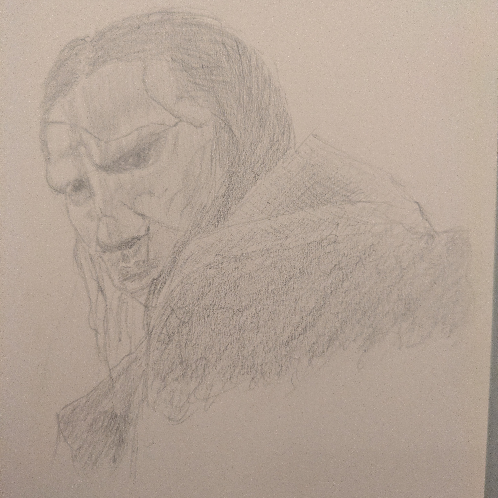

Site Updates (January 2026)
Hello lovelies.
Just a quick one from me today, little updates on the site and some ideas for moving forwards.
So I finally got around to finishing the link previews. I’d started doing them with Folie À 00000010 but had been too lazy to go back and add them to older posts and the various other pages like links and home. That’s done now.
I also changed the buttons (theme switcher at the top of the page and the blog tags on the blog index page) to be generated by JavaScript, meaning those folks viewing my site with noscript plugins or non-JS browsers won’t have nonfunctional buttons messing up the place. Note: hard refresh your browser session to get the new JS if you're not seeing the buttons; the old file is likely still in your cache if you've been here before.
Lastly, I’ve made it so the .git directory of this site’s source repository isn’t accessible via the web. The repo itself is public, but having that dot folder in the site’s root just felt like sloppy work. So I’ve moved all the actual content into a siteroot folder and hopefully it looks a bit less amateurish to any wandering hackers.
Looking towards the future, I’ve got a couple more things I’d like to add.
A blogroll: It’d be nice to have a page of permanent links to some of my favourite personal sites, maybe with a line or two about why I find them valuable. Nothing’s stopping me from doing this right now other than time. I’ll get to it soon, I’m sure.
Changing the top nav bar to contain links to /now and /blogroll: Not sure how I’d want to do it yet; just slapping more links on the current bar doesn’t sound great to me since I’d like the slash pages to be visually separated. The obvious answer is another row, but it’d look really thin with only two links, so I either make at least one more slash page or I come up with something else.
Mirroring this site on the Gemini protocol: I’ve got my other site on there, it’d be good to have this one as well. It’s obviously very small and quiet over there, but I’m really quite fond of it.
That’s about it for this website, I think. For now, at least. I’m sure as I continue to write posts and explore the blogosphere and the indie web I’ll come across more ideas worth stealing.
I do need to spend some real time working on my drawing so I can have better doodles for the site. I’d like them to be somewhat good. I got some watercolour paints for Christmas, might start working those in as well once I’ve found time to learn how to paint.

I watched the recent Frankenstein and then made something more horrific than Victor ever did
My horror fiction website needs some TLC. I want to make a nice banner image for the top and sort out link previews for everything on there. I think that’ll be my next web-related task beyond just writing.
Okay, that’s all from me.
Toodles,
–Antony F.